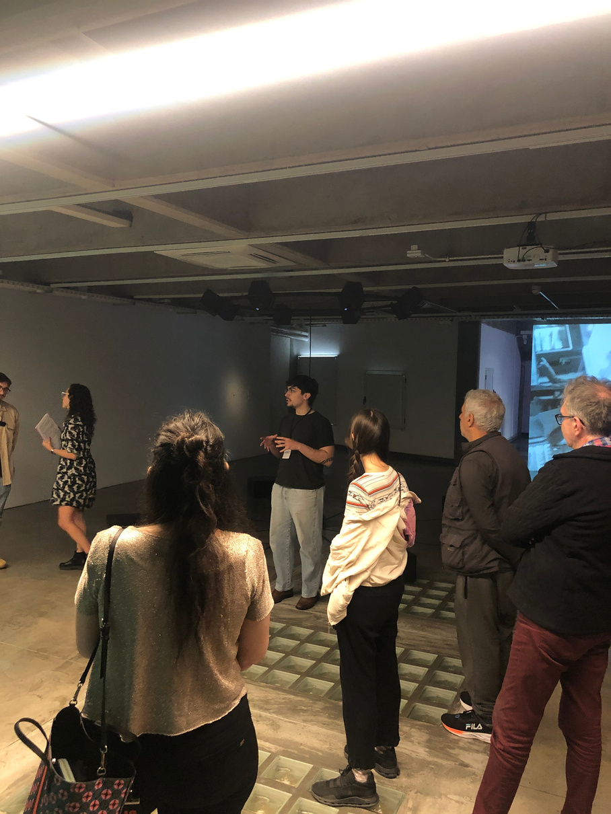
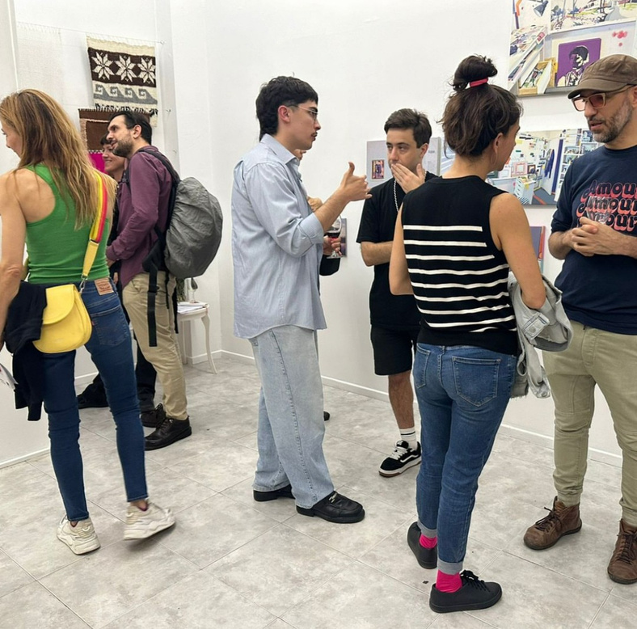

TOBIAS
DIAZ
DIAZ
MEDIADOR CULTURAL Y ASISTENTE DE GALERIAS
2026



LICENCIADO EN CURADURIA / MASTER EN COMUNICACIÓN
TOBIAS DIAZ
Llevo desde 2024 involucrándome profesionalmente en el campo cultural. Diseñé y ejecuté programas de mediación
para la Fundación Andreani que atendieron a más de 500 visitantes mensuales, adaptando contenidos técnicos
para audiencias diversas.
SOBRE MÍ


EXPERIENCIA
01
FUNDACION ANDREANI
2024-2025, MEDIADOR CULTURAL.
Gestión de grupos de hasta 60 personas en entornos museísticos, garantizando la calidad del relato
institucional y la fidelización del público a través de estrategias de mediación crítica.
02
GALERIA URRA HIP-HIP
2024, ASISTENTE DE GALERÍA DE ARTE.
Atención al cliente y asesoramiento comercial para coleccionistas, facilitando el proceso de venta mediante un
conocimiento profundo del mercado de arte y la producción de los artistas residentes.


03
MACAB (MUSEO DE ARTE CONTEMPORANEO)
2025, ASISTENCIA EN MONTAJE DE OBRA.
Asistencia técnica en la instalación de exhibiciones de gran formato, colaborando estrechamente con artistas y
curadores para la correcta implementación de requerimientos espaciales y lumínicos.
04
GALERIA PASTO
2024-2025, ASISTENTE DE GALERÍA.
Soporte operativo en la gestión de trastienda e inventario, incluyendo el acondicionamiento, embalaje técnico
para transporte nacional e internacional y actualización de bases de datos.


Lo que más me gusta hacer es generar experiencias mediante el arte.
Poder brindar un relato que despierte interés
en todo lo que habita el espacio.
Poder brindar un relato que despierte interés
en todo lo que habita el espacio.